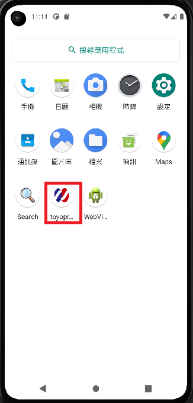
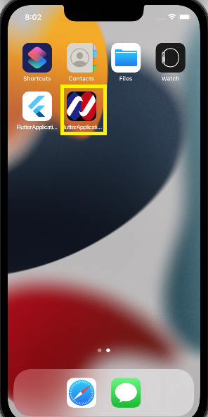

專案系列將由專案Launch icon開始，主程式main.dart僅負責導向首頁，Launch icons用於設定App顯示圖示，本單元將使用flutter_launcher_icons套件設定Android與iOS App圖示。
flutter_launcher_icons透過flutter_launcher_icons.yaml檔案執行來設定原生iOS與Android的launch icons，設定步驟如下：
flutter_icons:
android: true
ios: true
image_path: "圖示路徑"
min_sdk_android: 21 # android min sdk min:16, default 21
練習：請建立專案範本project並使用flutter_launcher_icons套件及Logo建立如下圖Android及iOS App圖示。
 